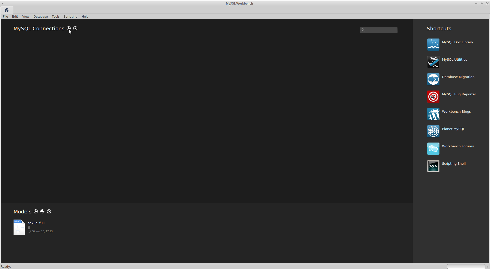
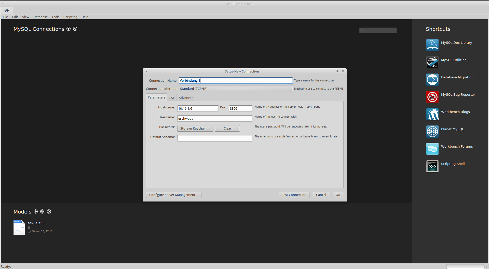
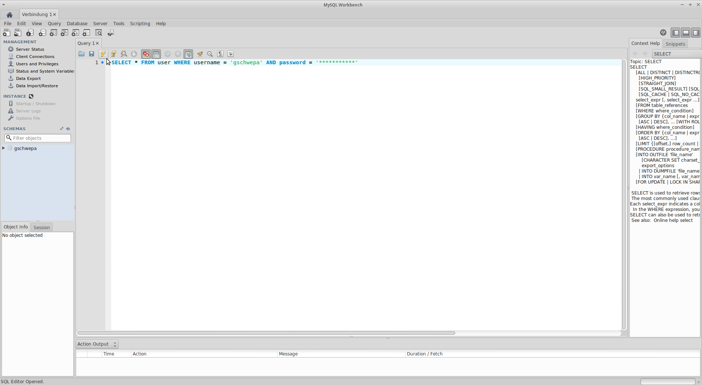

Schritt 1. Öffne das Programm
Schritt 2. Klicke auf

Schritt 3. Gib einen Verbindungsnamen Namen ein und gib für den Hostname
Schritt 4. Gib bei Username deinen Usernamen von der Schule ein und bestätige die Eingabe mit dem

Schritt 5. Nun kannst du mit einem Doppelklick eine Verbindung zur Datenbank herstellen.

Schritt 6. Jetzt kannst du SQL-Querys eingeben und ausführen!
